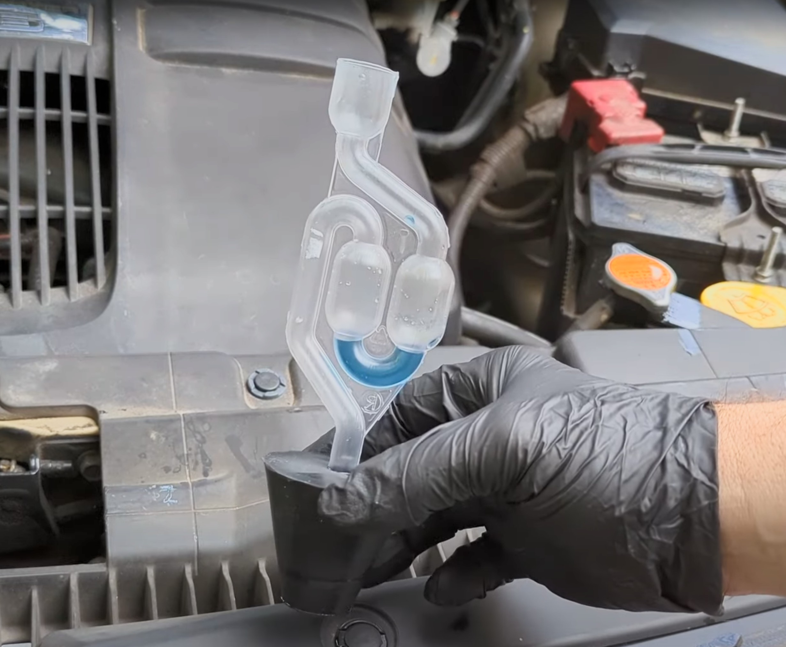

LeakLogic UK Guides & Advice

Head Gasket Sealant vs. Tester: Which Do You Need First?
Considering a head gasket sealant? Learn why you must use a combustion leak tester first to confirm the problem and avoid wasting money.
Read the guide →

How to Test a Head Gasket at Home – DIY Combustion Leak Test Guide
Our step-by-step guide to using a head gasket tester kit. Learn how to confirm a blown head gasket in your own driveway in minutes.
Read the guide →The Ultimate DIY Pre-Purchase Car Inspection Checklist (UK)
Our comprehensive checklist for inspecting a used car. Cover the exterior, interior, engine, and paperwork to avoid buying a lemon.
Read the guide →Blown Head Gasket Symptoms: 7 Warning Signs You Should Never Ignore
Learn the 7 key warning signs of a blown head gasket, like overheating and milky oil, that every UK driver needs to know about.
Read the guide →